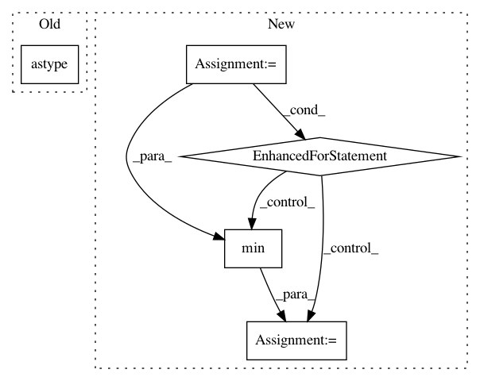

0537b722ea3bd3740ebb53226214cd67d92f2913,tslearn/metrics.py,,itakura_mask,#Any#Any#Any#,391
Before Change
upper_bound = numpy.round(upper_bound, 2)
upper_bound = numpy.floor(numpy.min(upper_bound, axis=0) + 1)
region = numpy.asarray([lower_bound, upper_bound]).astype("int64")
mask = numpy.full((sz1, sz2), numpy.inf)
for i, (j, k) in enumerate(region.T):
mask[j:k, i] = 0.
After Change
upper_bound[1] = ((sz1 - 1) - min_slope * (sz2 - 1)
+ min_slope * numpy.arange(sz2))
upper_bound_ = numpy.empty(sz2)
for i in prange(sz2):
upper_bound_[i] = min(round(upper_bound[0, i], 2),
round(upper_bound[1, i], 2))
upper_bound_ = numpy.floor(upper_bound_ + 1)
mask = numpy.full((sz1, sz2), numpy.inf)
for i in prange(sz2):
In pattern: SUPERPATTERN
Frequency: 3
Non-data size: 5
Instances
Project Name: rtavenar/tslearn
Commit Name: 0537b722ea3bd3740ebb53226214cd67d92f2913
Time: 2019-05-28
Author: johann.faouzi@icm-institute.org
File Name: tslearn/metrics.py
Class Name:
Method Name: itakura_mask
Project Name: librosa/librosa
Commit Name: 7faab20caee8d81f82ea323c675dd7fd3a983942
Time: 2014-01-23
Author: brm2132@columbia.edu
File Name: librosa/core.py
Class Name:
Method Name: stft
Project Name: kermitt2/delft
Commit Name: 151f9e7d141372ce45fc4367b81385eeccc95093
Time: 2018-06-20
Author: patrice.lopez@science-miner.com
File Name: sequenceLabelling/preprocess.py
Class Name:
Method Name: to_vector_simple_with_elmo